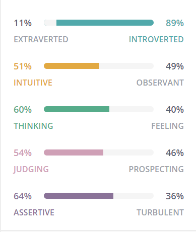
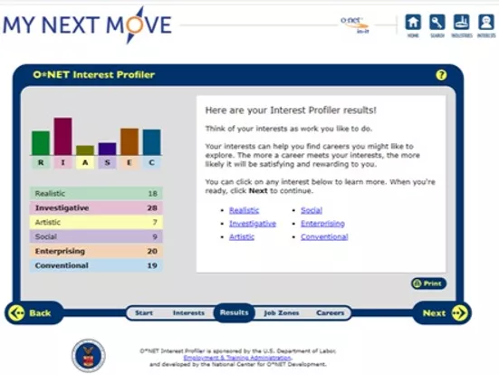

More About Me:
Hello! I am currently a Year one student pursuing my interest in Information Technology. From RIASEC, I am interested in being a data scientist. I planned to take up these modules, advanced databases, data visualisation and big data to further my interest in data science. I constantly seek to improve myself in this ever-changing dynamic world, be it skill set, perception and so on. I have been following this motto “My best and more”. In all my involvement, I seek to strive for excellence. I am an open minded and adaptable person. I take the initiative to step out of my comfort zone and gain new experiences along the way.
Personality
RIASEC
As of 2020
Hobby
- Growing Orchids
- Watch Korean Dramas